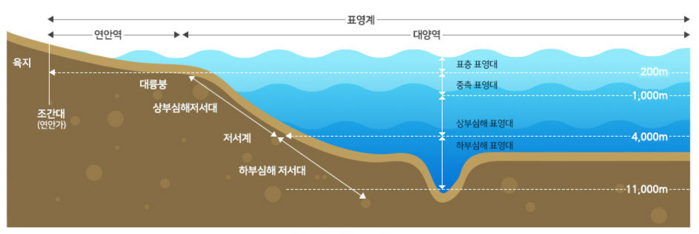

해양 생태계란?
1992년 채택된 "생물 다양성 협약"에 따르면
식물, 동물 및 미생물과 기능적으로 연계된 비생물계의 복합체
(dynamic complex of plant, animal and micro-organism communities
and their non-living environment interacting as a functional unit)로,
생물계와 비생물 환경이 상호 연계된 물질계와 그 안에서 상호작용하고 있는 인간과
물리적 환경을 모두 포함하는 광의적 개념으로 정의하고 있다.
해양 생태계 구조
연안역과 외양역(대양역)
-
연안 생태계
하구역, 갯벌과 조하대, 연근해 생태계(천해대 상부)로 구분가능하며,
외양 생태계와 비교할 때 매우 다양한 해양 생물종이 서식하고 있을뿐 아니라,
연안에서 유입되는 영양 물질의 공급이 활발한 관계로 상대적으로 높은 생산성을 유지하고 있다. -
외양 생태계
영양염류의 농도가 낮으며, 육상 생태계로 부터 받는
영향이 적으므로 상대적으로 낮은 생산성을 유지하고 있다.
해양 생태계 내 생물서식 현황 모식도
저서 생태계와 부유(표영) 생태계
해양생태계는 크게 해양생물의 생물학적 분포,
즉 서식 형태를 기준으로 저서나 해저에 서식하는 저서 생태계와 연안,
천해역 및 외양역의 표층, 중층, 심층에 위치한 부유(표영)생태계로 구분할 수 있다.
해양생태계는 육상 생태계에 비해서 해양 환경 전반에서 관찰되는 해류, 조석간만, 심도, 수온, 염분의 차이,
빛의 투과도 차이에 따른 물리적 변화 요인이 크며, 환경의 화학적 변화 요인은 더욱 높은 것이 특징이다.
특히 저서 생태계의 경우,
빛이 닿지 않고 수압의 증가로 부유(표영) 생태계와 전혀 다른 환경을 유지하며,
해양 저서 식물의 서식 공간이 되어 동물에게 먹이를 공급하고 유영생물의 산란장을 제공하거나
치어들을 위한 보호공간이 되기도 한다.
해양 생태계의 중요성
-
1.
육지의 침식을
예방하는 역할 -
2.
지구에서 소요되는
산소의 30~50%를
제공하는 역할 -
3.
해양생물의
산란장 및 서식지의
역할을 수행